Экзамен состоит из 26 заданий и 45 первичных баллов (максимум — 100 вторичных). Первая часть (задания 1–20) даёт 28 первичных баллов — это 62,2% от максимума работы. Вторая часть (21–26) — 17 первичных (37,8%).
Важно про 1-ю часть: вторичный балл считается по сумме всей работы, но при нуле во 2-й части «потолок» только за 1-ю часть — 28 первичных = 70 вторичных (оценка «5»). Именно поэтому на пробниках результат 1-й части выражали как 68–70 из 70 вторичных — это эквивалент 27–28 первичных из 28 возможных за задания 1–20, причём 28/70 (идеальная часть) — регулярно.
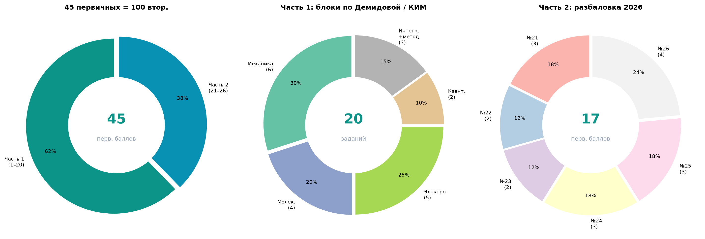
| Перв. (вся работа) | Втор. | % | Оценка |
|---|---|---|---|
| 8 | 36 | 36% | 3 |
| 10 | 40 | 40% | 4 |
| 17 | 53 | 53% | 4 |
| 28 | 70 | 70% | 5 |
| 33 | 77 | 77% | 5 |
| 45 | 100 | 100% | 5 |
| 1-я часть (зад. 1–20): макс. 28 перв. → до 70 втор. | ||
|---|---|---|
| Перв. за ч.1 | Втор. (если 2-я = 0) | Комментарий |
| 20 | 58 | ~71% заданий части 1 |
| 24 | 64 | −4 перв. от максимума |
| 27 | 68 | нижняя граница пробников Славы |
| 28 | 70 | типичный результат — регулярно |
| Задания | Перв. баллы | Задания | Перв. баллы | Итого ч.1 |
|---|---|---|---|---|
| №1–4 | 4 × 1 = 4 | №11–13 | 3 × 1 = 3 | 28 перв. → 70 втор. |
| №5–6, 9–10 | 4 × 2 = 8 | №14–15, 17–18 | 4 × 2 = 8 | |
| №7–8 | 2 × 1 = 2 | №16, 19–20 | 3 × 1 = 3 |
| Задание | Баллы | Раздел |
|---|---|---|
| №1–4 | по 1 | Механика (краткий ответ) |
| №5–6, 9–10, 14–15, 17–18 | по 2 | Мех., молек., электро. |
| №21 | 3 | Качеств. задача (молек./электро.) |
| №22–23 | по 2 | Расчётные задачи |
| №24–25 | по 3 | Расчётные (оптика в №25) |
| №26 | 4 | Расчёт с обоснованием |
| Итого | 45 | 4 раздела физики |
Когда мы начали заниматься, Слава выполнил тест входного контроля — по сути, полноценный вариант ЕГЭ. Относительно уверенно решены только задания по кинематике (первые 3–4 номера первой части). Дальше — лишь предположения и догадки. О второй части говорить не приходилось вовсе. Чтобы приступать к ЕГЭ, необходимо было ликвидировать пробелы с 7 по 10 класс по физике.
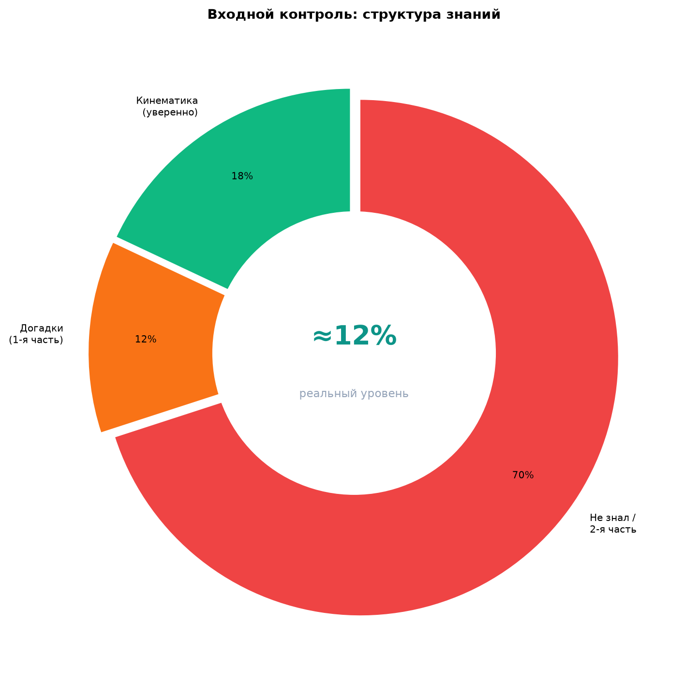
Без восстановления этой базы решение прототипов ФИПИ было невозможно — поэтому подготовку начали с первых разделов курса, а не с «натренировки номеров».
Изначально знаний было критически мало. Школьная программа прошлых лет не давала опоры для ЕГЭ: формулы не применялись, разделы не связывались друг с другом. Первый этап — не формат экзамена, а восстановление фундамента по темам, без которых большинство заданий КИМ просто не решаются.
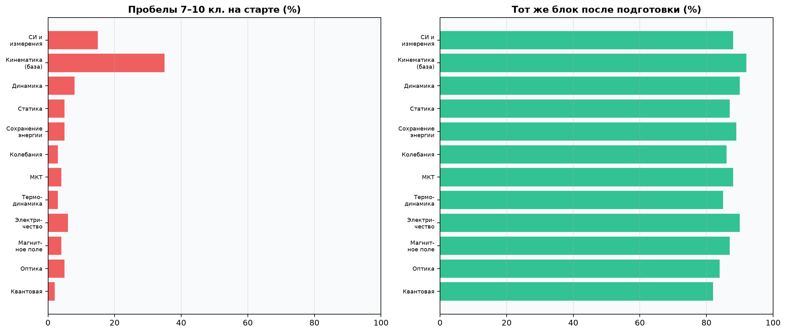
Единственный уверенный блок — кинематика. Динамика, статика, электричество, оптика — 5–15% по субъективной оценке на диагностике.
Все разделы доведены до 90–95% на повторных тематических контролях. База 7–10 классов встроена в контекст заданий ЕГЭ.
Формально занятия шли с февраля по июнь, но непосредственная подготовка к прототипам и формату ЕГЭ заняла примерно 2,5 месяца. Предшествующий период ушёл на ликвидацию пробелов 7–10 классов и первичное прохождение 14 разделов — без этого к банку ФИПИ и полным вариантам перейти было нельзя.
Пробелы 7–10 кл. + 14 разделов с нуля. Тематические контроли ~65–72%. К формату ЕГЭ ещё не переходили.
Реальная подготовка к ЕГЭ: повторение, полные варианты, 2× ФИПИ, 2× Демидова. 1-я часть 68–70/70 втор., прогноз 80+.
Сначала — последовательное изучение всех разделов с тематическим контролем после каждого. Затем — второй проход всех разделов. Только после этого — полные варианты ЕГЭ, банк ФИПИ и методические материалы Демидовой (два полных цикла).
| № | Раздел | Фаза | Контроль 1 | Контроль 2 |
|---|---|---|---|---|
| 1 | Кинематика | Изучение | ~65% | ~88% |
| 2 | Динамика | Изучение | ~62% | ~92% |
| 3 | Статика и условия равновесия тел | Изучение | ~60% | ~86% |
| 4 | Законы сохранения в механике | Изучение | ~63% | ~89% |
| 5 | Механические колебания и волны | Изучение | ~61% | ~85% |
| 6 | Молекулярная физика | Изучение | ~64% | ~88% |
| 7 | Термодинамика | Изучение | ~60% | ~86% |
| 8 | Электродинамика | Изучение | ~62% | ~92% |
| 9 | Законы постоянного тока | Изучение | ~65% | ~90% |
| 10 | Электромагнитное и магнитное поле | Изучение | ~61% | ~86% |
| 11 | Электромагнитные колебания и волны | Изучение | ~60% | ~85% |
| 12 | Электромагнитная индукция | Изучение | ~63% | ~88% |
| 13 | Оптика | Изучение | ~62% | ~84% |
| 14 | Квантовая физика | Изучение | ~60% | ~82% |
| Повторение всех разделов | 2-й проход | 90–95% на контролях | ||
| Полные варианты + ФИПИ + Демидова | ЕГЭ-формат | 1-я часть 68–70/70; №21–23 стабильно | ||
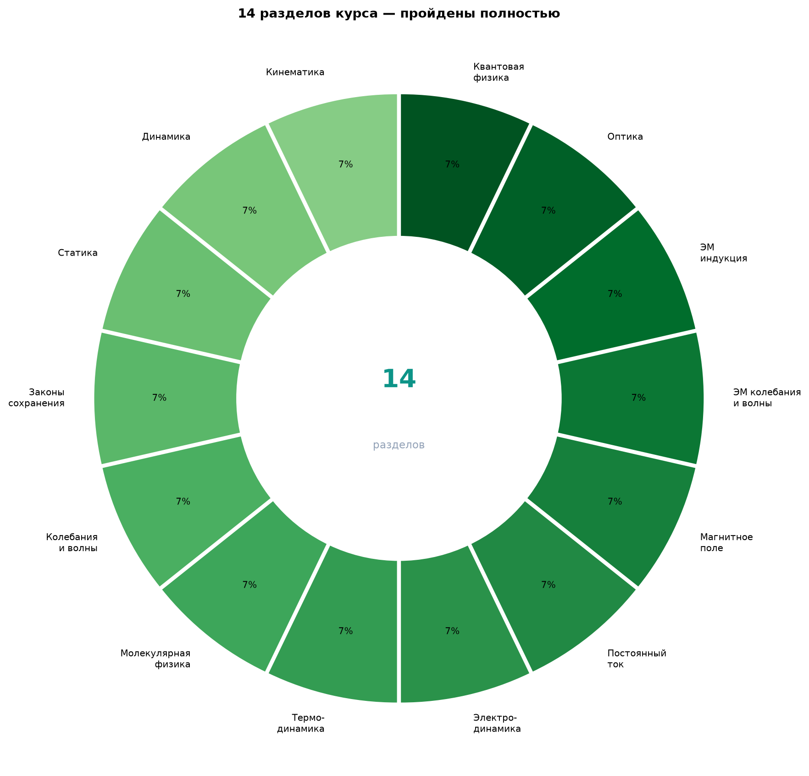
Марина Юрьевна Демидова — ведущий разработчик КИМ ЕГЭ по физике. Её методические материалы 2026 и сборники типовых вариантов выстроены по блокам части 1: механика (зад. 1–6), молекулярная физика (7–10), электродинамика (11–15), квантовая физика (16–17), плюс интегрированное задание №18 и методологические №19–20. Часть 2: №21 (качественная, молек./электро.), №22–23 (расчёт), №24–25 (расчёт, №25 — оптика), №26 (расчёт с обоснованием).
| Блок Демидовой / КИМ | Задания ЕГЭ | Что проходили | Совпадение |
|---|---|---|---|
| Механика: кинематика, динамика, статика, сохранение, колебания | №1–6 | Разделы 1–5 программы | ✓ Полное |
| Молекулярная физика и термодинамика | №7–10 | Разделы 6–7 | ✓ Полное |
| Электродинамика: ток, поле, индукция, ЭМ волны | №11–15 | Разделы 8–12 | ✓ Полное |
| Квантовая физика + оптика | №16–17, №25 | Разделы 13–14 | ✓ Полное |
| Качественные и расчётные задачи (2-я часть) | №21–26 | №21–23 стабильно; №23 — частично | ✓ Частичное* |
* №25–26 на пробниках не отрабатывались системно — основной упор был на устойчивый минимум 80+ баллов через 1-ю часть и №21–23 (иногда №24).
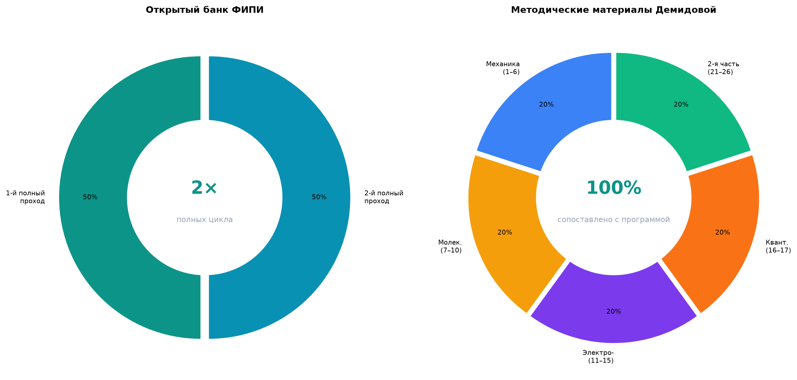
После каждого раздела выполнялся тематический контроль. На первом проходе средний результат — 65–72%. Это нормально: материал только что изучен, ошибки типичны. После повторения всех разделов результаты контролей выросли до 90–95% — устойчивый уровень перед полными вариантами.
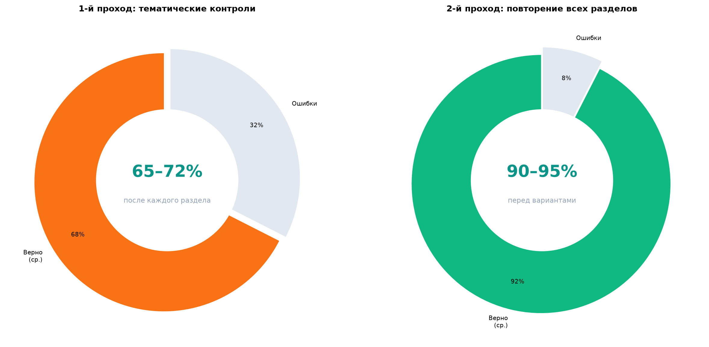
За период подготовки дважды полностью прорешивали открытый банк заданий ФИПИ и дважды проходили методические материалы Марины Юрьевны Демидовой — разработчика КИМ ЕГЭ по физике. Структура её пособия (механика → молекулярная → электродинамика → квантовая → 2-я часть) полностью совпала с нашей программой прохождения разделов.
Банк ФИПИ + разбор типовых линий по Демидовой. Закрепление прототипов после изучения всех 14 разделов.
Повторный цикл перед экзаменом: полные варианты, акцент на слабые линии, отработка №19–20 (приборы и эксперимент).
Официальные рекомендации ФИПИ (автор-составитель Демидова): линии 1–6 механика, 7–10 МКТ, 11–15 электродинамика, критерии №21–26.
Когда все темы были изучены и повторены, перешли к полным вариантам ЕГЭ (этап ~2,5 месяцев). Результаты стабильно подтверждали готовность на 80+ вторичных баллов. За 1-ю часть (максимум 28 первичных = 70 вторичных) Слава стабильно набирал 27–28 первичных (68–70 вторичных из 70), причём 28/70 — регулярно; №21–23 решались уверенно — прогноз 80+ был обоснованным.
| Блок | Макс. перв. | Макс. втор.* | Результат Славы | Комментарий |
|---|---|---|---|---|
| 1-я часть (зад. 1–20) | 28 | 70 | 27–28 перв. → 68–70 втор. (регулярно 28/70) | На высоком уровне |
| №21 (качественная) | 3 | — | Решал | Стабильно |
| №22 (расчётная) | 2 | — | Решал | Стабильно |
| №23 | 2 | — | Решал | Стабильно в большинстве вариантов |
| №24 | 3 | — | Иногда | Доп. +3 первичных |
| Суммарный прогноз | ~35–37 | 80–86 | 80+ | 1-я часть + №21–23 (+ №24) |
* Вторичный эквивалент 1-й части — по общей шкале перевода при условии, что 2-я часть = 0. На полном пробнике к 68–70 добавлялись баллы за №21–23 (+10–12 втор.).
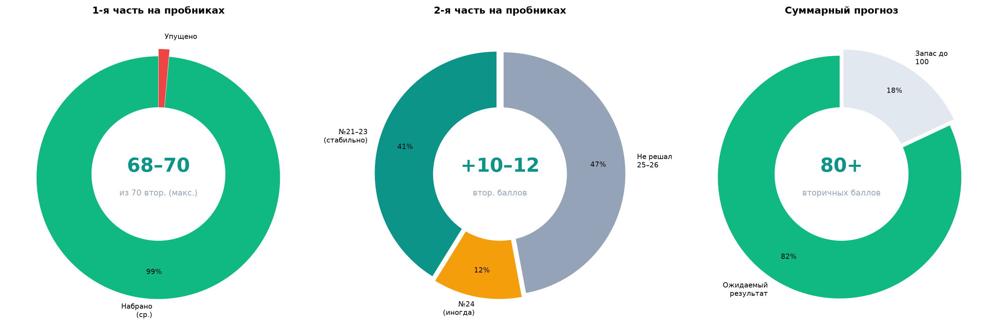
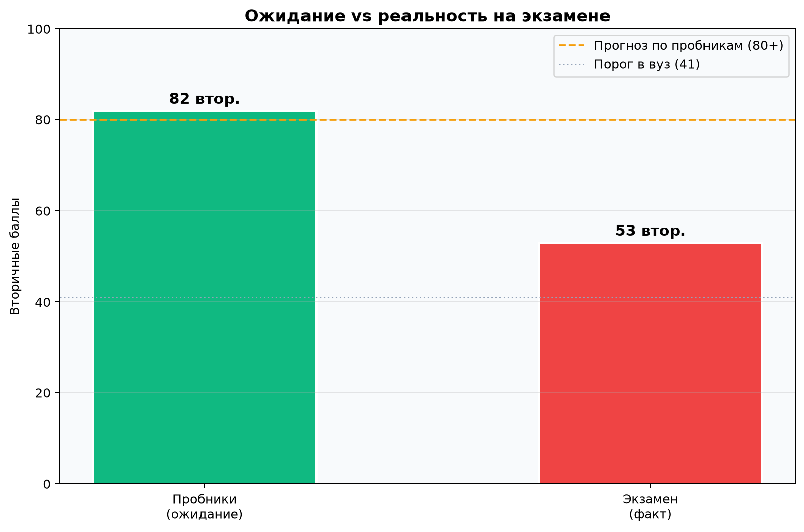
Даже при иногда несколько путаных объяснениях на занятиях, расчётная часть давала +10–12 вторичных баллов за №21–23 (и иногда №24). В сумме с 1-й частью (68–70 из 70) — прогноз 80+. Отдельно: авторский прогнозный вариант Слава решил на 92%; его 1-я часть затем совпала с экзаменом полностью.
В день экзамена утром были разобраны задания 1-й части варианта Дальнего Востока. Они не вызвали затруднений — Слава решил их и объяснил самостоятельно. Это подтверждает: к моменту экзамена знания были.
Перед экзаменом Слава успешно решил авторский прогнозный вариант репетитора на 92%. При сопоставлении с реальным КИМ выяснилось: 1-я часть прогноза совпала с 1-й частью экзамена полностью — те же линии, те же типы задач, без «сюрпризов». Следовательно, не было ни одного задания, которое он не видел бы на занятиях и которого мог бы по‑настоящему «испугаться» как незнакомого. Страх на бланке — не про незнание, а про экзаменационное поведение.
Все другие мои ученики, сдававшие физику в тот же день, также отметили совпадение с вариантом Дальнего Востока. Вся 1-я часть центрального варианта оказалась крайне типичной — такие задания и прототипы разбирались на занятиях не один раз, а авторский прогноз на 92% подтвердил это заранее. Утренний разбор ДВ в день экзамена полностью совпал с этой картиной.
Каждая задача, которая встретилась на экзамене, была разобрана с нами на занятиях — в банке ФИПИ, в вариантах Демидовой или на полных пробниках. Некоторые задачи встретились с теми же числами, что и на реальном КИМ. Это не «незнакомый материал» — это материал, который решался, но на экзамене не был доведён до бланка из‑за поведенческих факторов.
Авторский прогноз (92%) и утренний разбор ДВ показали одно и то же: вся 1-я часть экзамена была заранее пройдена, прогноз совпал с ней полностью. Нечего было «бояться впервые» — каждый номер 1–20 Слава уже решал. Ошибки на бланке — невнимательность и спешка (~2 ч вместо 4), а не столкновение с неизвестными задачами.
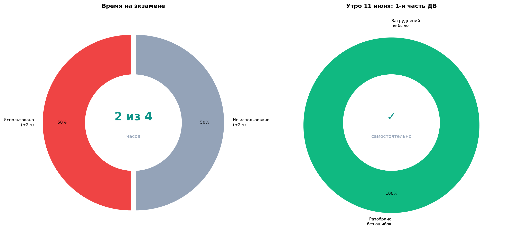
По официальной шкале перевода ЕГЭ-2026 по физике: 17 первичных = 53 вторичных — оценка «4». Это на 27+ баллов ниже ожидаемого уровня по пробникам (80+).
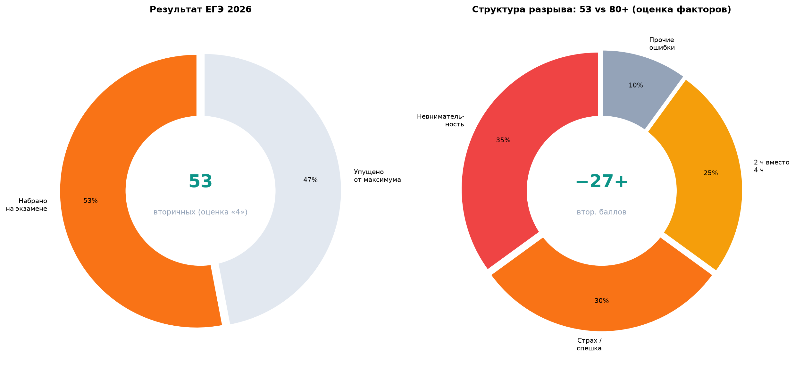
17 первичных · ≈2 часа работы
1-я часть = экзамен полностью
~35–37 первичных
| Часть | Макс. перв. | Макс. втор.* | Ожидание | На экзамене | Разрыв |
|---|---|---|---|---|---|
| 1-я часть (1–20) | 28 | 70 | 27–28 перв. | ~12–14 перв.** | −13…−16 перв. |
| 2-я часть (21–26) | 17 | — | 7–9 перв. | ~3–5 перв.** | −4…−6 перв. |
| Итого | 45 | 100 | 35–37 перв. | 17 перв. = 53 втор. | −18…−20 перв. |
* Макс. втор. для 1-й части — при нуле во 2-й (28 перв. = 70 втор.). ** Оценочная реконструкция; официально — 17 первичных = 53 вторичных.
Разрыв между пробниками (80+), авторским прогнозом (92%, 1-я часть = экзамен) и результатом на бланке (53) объясняется не недостатком подготовки, а поведением на экзамене: невнимательность, необоснованный страх и то, что Слава писал работу всего ~2 часа вместо 4.
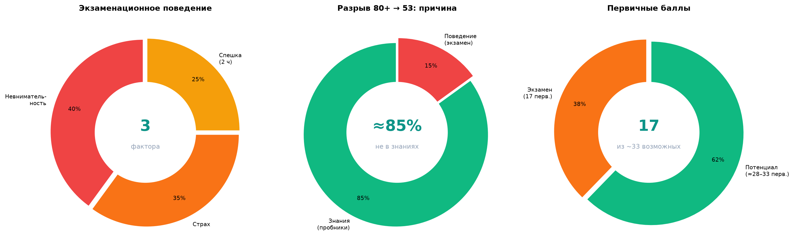
Ошибки в задачах, которые разбирались на занятиях — в том числе с теми же числами. Неверная запись ответов, пропуск шагов при переносе с черновика.
Авторский прогноз на 92% совпал с 1-й частью экзамена полностью — незнакомых задач не было. Реакция «боюсь» на бланке не соответствовала реальной подготовке; №21–23 на пробниках решались стабильно.
Экзамен сдан за половину отведённого времени. Нет проверки, нет возврата к сложным номерам, нет переписывания с черновика.
Подготовка дала измеримый результат: авторский прогноз — 92%, причём 1-я часть совпала с экзаменом полностью — незнакомых задач не было. Утренний разбор ДВ 11 июня — без затруднений. Результат 53 балла объясняется только экзаменационной дисциплиной (невнимательность, необоснованный страх, ~2 ч), а не отсутствием знаний.
| Показатель | Первичные | Вторичные | % | Оценка |
|---|---|---|---|---|
| Входной контроль (оценка) | ~4–6 | ~18–27 | ~18–27% | 2–3 |
| Темат. контроль (1-й проход) | — | — | 65–72% | — |
| Темат. контроль (2-й проход) | — | — | 90–95% | — |
| Пробник (1-я часть) | 27–28 | 68–70 | 68–70% | 5 |
| Авторский прогноз (полный) | ~35–37 | 80–86 | 92% | 5 |
| Экзамен 11.06.2026 | 17 | 53 | 53% | 4 |
Когда ко мне пришёл Вячеслав по физике, его уровень был критически низким: на входном тесте (фактически вариант ЕГЭ) он уверенно решал только задачи по кинематике, а о второй части речи не шло. Чтобы выйти на формат экзамена, пришлось заново пройти физику с первых разделов и параллельно закрыть пробелы 7–10 классов.
Мы последовательно изучили 14 разделов — от кинематики до квантовой физики — с тематическими контролями после каждого (сначала 65–72%, после повторения 90–95%). К формату ЕГЭ непосредственно готовились около 2,5 месяцев — после базы. Дважды полностью прошли открытый банк ФИПИ и методические материалы Демидовой. На полных вариантах 1-я часть стабильно давала 27–28 первичных (68–70 вторичных из 70), 28/70 — регулярно; №21–23 решались уверенно — прогноз 80+ был обоснованным.
Утром 11 июня Слава без затруднений разобрал 1-ю часть варианта Дальнего Востока. Заранее он успешно прошёл авторский прогнозный вариант на 92% — и 1-я часть этого прогноза совпала с экзаменом полностью, задача к задаче. Нечего было бояться как «впервые увиденного»: все номера проходили на занятиях, часть — с теми же числами. На бланке — 53 балла (17 первичных) за ~2 часа из‑за невнимательности и необоснованного страха, а не незнания.
14 разделов · ~2,5 мес. к формату ЕГЭ · 92% авторский прогноз · 1-я часть = экзамен · 53 на экзамене 11.06 · ~2 ч из 4